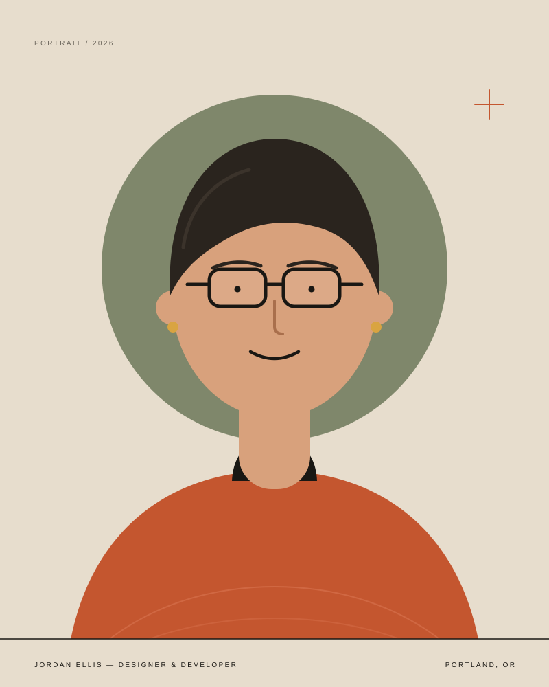

Clarity over cleverness
The best interface is the one you don't have to think about. I'd rather be understood than admired — and I'll always choose the clearer option.
About the studio
I'm Jordan — a designer and front-end developer in Portland, Oregon. For the last decade I've helped small teams look clearer, sound more like themselves, and give visitors a reason to stay.

Hello, I'm Jordan
I started building websites in 2014 because I wanted to make things that were useful and beautiful in equal measure. That hasn't changed. What has changed is how much I've learned about the gap between what a business wants to say and what a visitor needs to hear.
Before going independent, I worked in-house at a small design studio, where I learned to ask better questions, edit ruthlessly, and ship on time. Now I work directly with founders and small teams — usually over a few good conversations and a shared folder of half-formed ideas.
When I'm not at my desk, I'm likely walking somewhere green, making a slow dinner, or taking photographs of signs I find funny.
— Jordan
What I believe
The best interface is the one you don't have to think about. I'd rather be understood than admired — and I'll always choose the clearer option.
Type, spacing, loading speed, the wording of a button. The details aren't decoration; they're the experience itself. I sweat them so you don't have to.
You work with me from the first sketch to the final deploy. Same person, same context, far fewer things lost in translation.
The short version
No big agency story. Just a steady practice built on good work and good relationships.
Built a site for a friend's bakery. Learned that a small business doesn't need more — it needs the right things, in the right order.
Left a studio job to work directly with founders. The first year was mostly listening — and it made the design better.
Started focusing on small, considered websites instead of big, complicated ones. Fewer projects, more attention, better outcomes.
Same curiosity, same standards, same belief that good design should feel effortless to the person using it.
Whether you're starting fresh or fixing what you have, I'd love to hear what you're working on.